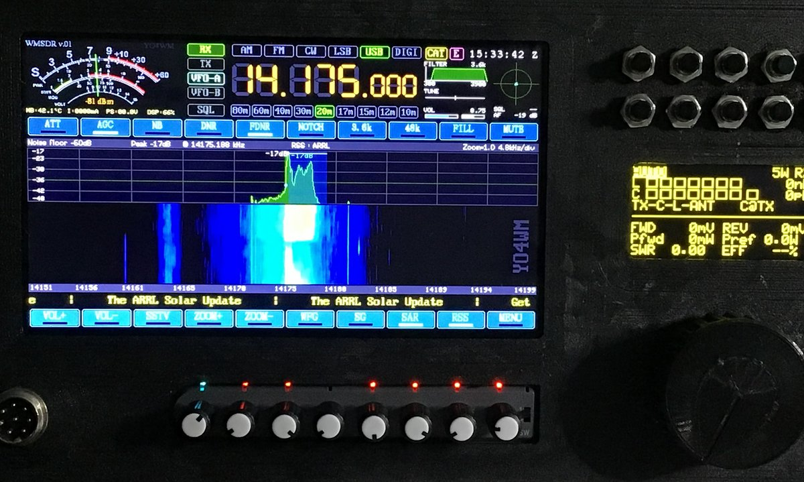

Panadapter, récepteur DSP et tête de commande pour votre transceiver QRP.
Le WMSDR améliore le poste que vous possédez déjà — il ne le remplace pas. Le poste garde la HF, le filtrage et l'émission ; le WMSDR ajoute l'écran, le traitement numérique et les décodeurs.

Touchez un signal pour vous y accorder. Zoom, curseur, S-mètre calibré.
Réduction de bruit, notch, noise blanker, AGC, égaliseur, équilibrage I/Q.
CW, RTTY, PSK31/63, FT8, SSTV et cartes météo WeFax — sans ordinateur.
Images, liste FT8 et émission CW depuis le téléphone ou le PC.
CAT, huit boutons configurables, écran tactile 800×480.
Manuel complet en français et en anglais, à lire en ligne ou en PDF.
Poste de référence : uSDX triband (WB2CBA) — tout transceiver QRP fournissant I/Q et CAT peut convenir.
Panadapter, DSP receiver and control head for your QRP transceiver.
WMSDR enhances the rig you already own — it does not replace it. The rig keeps RF, filtering and transmit; WMSDR adds the display, the signal processing and the decoders.
Tap a signal to tune to it. Zoom, cursor readout, calibrated S-meter.
Noise reduction, notch, noise blanker, AGC, equaliser, I/Q balance.
CW, RTTY, PSK31/63, FT8, SSTV and WeFax weather charts — no computer needed.
Pictures, FT8 list and CW transmit from your phone or PC.
CAT, eight assignable knobs, 800×480 touch screen.
Full manual in English and French, read online or as PDF.
Reference rig: uSDX triband (WB2CBA) — any QRP transceiver that provides I/Q and CAT may suit.